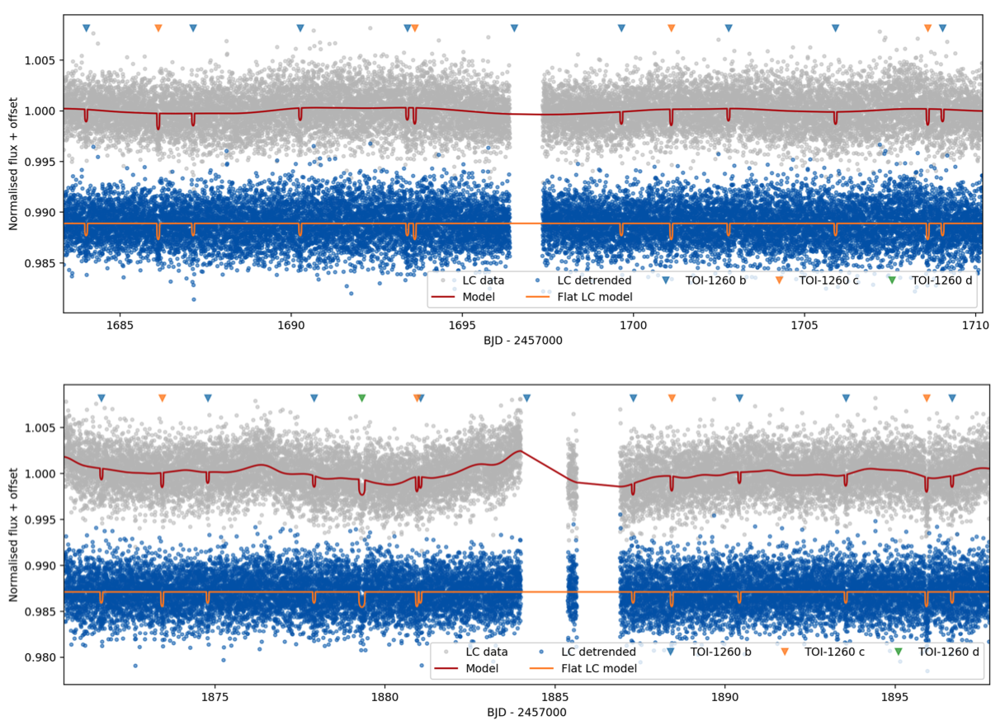

STATUS UPDATE: This Sunday (18-04-2021) we celebrated the third year since the launch of TESS!
Hello TESS followers and welcome to this weeks news bulletin. First we have a "birthday card" for TESS, acknowledging its 3rd year since launch and some of its spectacular detections.
Now onto our main feature, this week we have three papers from the archive, enjoy!
Hot planets around cool stars -- two short-period mini-Neptunes transiting the late K-dwarf TOI-1260 (Georgieva et, al., 2021):
In this paper the authors present the discovery of two sub-Neptune sized planets in a close orbit around the host star, TOI-1260 - a low metallicity K6V dwarf star. Evidence also indicates that there may be an additional planet of a similar size, in a larger orbit.
Utilizing TESS photometry the radii of the two inner planets are derived as, Rb = 2.33 R⊕ and Rc = 2.82 R⊕, with periods of 3.13 and 7.49 days for TOI-1260b and TOI-1260c, respectively.
When combining the TESS data with precision radial velocities from HARPS-N, the authors were able to characterize the planetary system, obtaining mass estimates of Mb = 8.61 M⊕ and Mc=11.84 M⊕.
The star was determined as moderately active with a complex activity pattern and as such required the use of Gaussian Process (GP) regression for both the light curve detrending and the radial velocity modeling (see the paper for more detail on this method). Using GP the authors successfully disentangled the stellar-induced signal from the planetary signals.
Highly structured inner planetary system debris around the intermediate age Sun-like star TYC 8830 410 1 (Melis et, al., 2021):
TYC 8830 410 1 is an extremely dusty G9V main sequence star, which hosts inner planetary system dust. This dust has a temperature of ~300 K, a fractional infrared luminosity of ~1%, and a mildy-crystalline sold-state emission feature is shown via mid-infrared spectroscopy.
The system is ~600 Myrs old and has an M4-type companion star that is 49.5" away and is co-moving and co-distant. A "dipper-like" dimming effect is also exhibited in the system as detected via ASAS-SN, TESS, and LCOGT, this is likely due to a star-sized cloud of dust orbiting the star in addition to smaller dust structures.
Given the extreme properties of the material it is likely that dramatic dust production mechanisms were at play, including something similar to a giant impact event like that which formed the Earth-Moon system. Further investigation of this system will deliver significant advances in our understanding of the origin, structure, and evolution of extremely dusty inner planetary systems.
TESS observations of TX Col: Rapidly varying accretion flow (Rawat et, al., 2021):
Using data from the TESS mission the authors have examined the intermediate polar TX CoI. A detailed time-resolved timing analysis was conducted, and the power spectra of the 52 day continuous time series indicated an orbital period of 5.691 hr, spin period of 1909.5 s, and beat period of 2105.76 s, consistent with previously obtained results.
The authors also detected the presence of quasi-periodic oscillations for a few days with periods of 5850-5950 s. These QPOs appear to be due to the beating of the Keplerian period with the spin period of the white dwarf. Using the TESS data the authors examined the evolution of the systems accretion geometry and found that TX Col changes its accretion mechanism each day, thus confirming its variable disk-overflow accretion nature. Please read the paper for more information about this fascinating system.

Fig. 1: Taken Georgieva et. al., (2021). PDCSAP light curve in grey with GP model and transits over plotted in red, and resulting detrended light curve in blue for Sector 14 (top panel) and Sector 21 (bottom panel). The single transit event is visible in the bottom panel at 1879.3 days here plotted with a duration consistent with an arbitrary period of 40 days for visualization. Individual transits are marked with triangles.
Fig. 2: Taken Melis et. al., (2021). TESS light curves for TYC8830 410 1; flux is normalized to the maximum value seen in each individual panel. A deep dip and stochastic variability at the ∼20% level are apparent. Each light curve is normalized to unity at its respective maximum value. Top: TESS Sector 1 FFI light curve. Bottom: TESS Sector 28 two-minute cadence light curve.
Fig. 3: Taken Rawat et. al., (2021). TESS light curve of TX Col, where the red dots represent the mean counts/s of each day